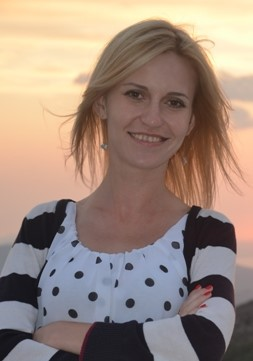

ОПЫТ РАБОТЫ
С 01.12.2018 по наст вр.
ИП «Велком» (с 12.08.2019 переименован в УП «А1»)
Должность: инженер отдела роуминга и фрод-мониторинга
Основные обязанности:
- выполнение протоколов IR24, IR32, IR35, IR38;
- внесение настроек в конфигурацию узлов HLR/HSS, MSS, SGSN, GGSN, MME, DRA;
- контроль качества предоставления услуги международный роуминг и международ-ная связь;
- исследование жалоб по услугам международный роуминг и международная связь;
- взаимодействие с техническим персоналом роуминг-партнеров по вопросам про-верки и обслуживания услуги международный роуминг;
- выявление и пресечение мошеннических действий в телекоммуникационной сети
С 22.09.2014. по 30.11.2018.
ИП «Велком»
Должность: инженер отдела операционного и сервисного контроля
Основные обязанности:
- контроль состояния, настройка и обслуживание телекоммуникационного оборудова-ния, сервисных платформ, аппаратных и программных ресурсов сети предприятия;
- осуществление поддержки пользователей
С 16.12.2013г. по 21.09.2014.
ИП «Велком»
Должность: специалист по работе с клиентами справочно-информационной службы
Основные обязанности:
- консультирование абонентов по услугам связи компании;
- телемаркетинг
С 01.08.2013г. по 15.12.2013
ОАО «АГАТ-СИСТЕМ» – управляющая компания холдинга «Системы связи и управления»
Должность: инженер
Основные обязанности:
- осуществление частотно-территориального планирования сети транкинговой радиосвязи
ОБРАЗОВАНИЕ
С 01.09.2009г. по 30.06.2013г. (дневная форма обучения)
БГУИР (с отличием)
Факультет: телекоммуникаций
Квалификация: инженер по телекоммуникациям
Специальность: системы радиосвязи, радиовещания и телевидения
01.09.2005г. по 30.06.2009г. (дневная форма обучения)
ВГКС
Факультет: электросвязи
Квалификация: техник по телекоммуникациям
Специальность: системы радиосвязи, радиовещания и телевидения
ДОПОЛНИТЕЛЬНАЯ ИНФОРМАЦИЯ
- иностранные языки: английский – уровень Intermediate;
- наличие водительского удостоверения категории B (стаж вождения 11 лет);
- интересы и хобби: путешествия, йога, дайвинг, психология;
- моё жизненное кредо – никогда не останавливайся